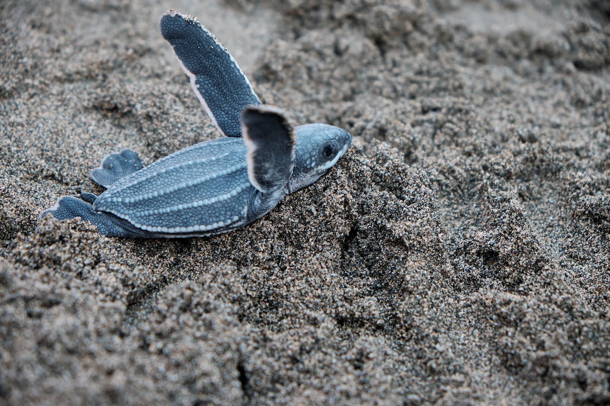
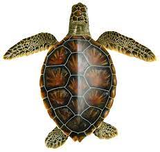
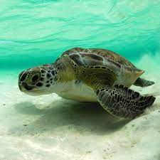
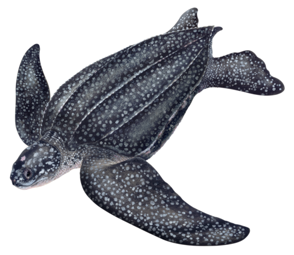
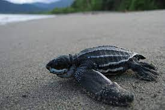
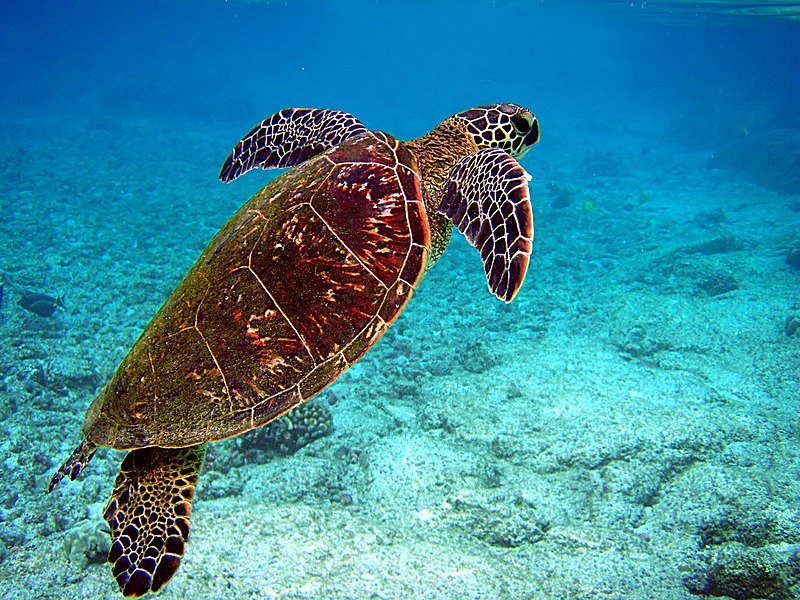

Marine turtles were roaming the oceans for about 190 million years. Among the many different variety of this
species only eight of these ancient reptiles are found living today.
Of the eight Sri Lanka is famous for five kinds of turtles who regularly visit the sandy beaches to nest in Sri
Lanka's South Western and South Eastern beaches from Induruwa to Yala and Kandakuliya in the Puttalam district.
Along the South Western coast turtles rest in Induruwa, Kosgoda, Akurala, Mavela, Rekava and Kahanda Modera. In
the South Eastern beach from Usangoda, Ambalantota, Bundala upto Yala the turtles are found.
five different species visit Sri Lanka beaches to nest
- Green Turtle
- Loger head Turtle
- Oliver Ridley Turtle
- Leatherback Turtle
- Hawksbill Turtle

Green Sea Turtle

The green sea turtle is the largest hard-shelled sea turtle. They are unique among sea turtles in that they are
herbivores, eating mostly seagrasses and algae. This diet is what gives their fat a greenish color (not their
shells), which is where their name comes from.
Did you know that green turtles got their name because
they’re green on the inside? A diet primarily consisting of algae diet makes their internal fat stores green!
The Black Sea Turtle (Chelonia mydas agassizii) is a subspecies of green turtle found in the East Pacific.
Scientific Classification
- Kingdom: Animalia
- Phylum: Chordata
- Class: Reptilia
- Order: Testudines
- Family: Cheloniidae
Description
- Adult Weight: 136 - 199 kgs (300 - 440 lbs)
- Adult Size: 0.9 - 1.2 m (3 - 4 ft)
- Appearance: Rounded head, greenish-black coloration, smooth domed carapace with teardrop shape
- Diet: Seagrasses, mangrove leaves and shoots, jellyfish and algae

Where we can find
Leatherback Turtle

The green sea turtle is the largest hard-shelled sea turtle. They are unique among sea turtles in that they are
herbivores, eating mostly seagrasses and algae. This diet is what gives their fat a greenish color (not their
shells), which is where their name comes from.
The largest sea turtle species, the deepest divers and the
true world travelers, leatherbacks shatter every record. West Pacific leatherbacks can make a 7,000 mile
migratory journey within 10-12 months.
Scientific Classification
- Kingdom: Animalia
- Phylum: Chordata
- Class: Reptilia
- Order: Testudines
- Family: Dermochelyidae
Description
- Adult Weight: Females 250 - 500 kgs (551 - 1102 lbs), Males up to 900 kgs (1985 lbs)
- Adult Size: 1.20 - 2.40 m ( 3.90 - 7.87 ft)
- Appearance: Blunt head with visible pineal gland or ‘pink spot’, grayish black with white patches,
leathery carapace with 7 ridges (5 dorsal and 2 on sides)
- Diet: Jellyfish, salps, siphonophores, pyrosomes and other soft-bodied invertebrates

Where we can find
Olive Ridley Turtle
The olive ridley gets its name from the olive green color of its heart-shaped shell. The species is among the
smallest of the world’s sea turtles and is found primarily in the tropical regions of the Pacific, Indian, and
Atlantic oceans.
Olive ridley turtles are found throughout the world.
Thousands of Olive Ridleys can show up at nesting
beaches together during arribadas, nesting events timed around moon cycles. The word arribada means “arrival” in
Spanish. The only other sea turtles known to nest in arribadas are Kemp’s Ridleys.
Scientific Classification
- Kingdom: Animalia
- Phylum: Chordata
- Class: Reptilia
- Order: Testudines
- Family: Cheloniidae
Description
- Adult Weight: Up to 45 kgs (100 lbs)
- Adult Size: 0.6 - 0.76 m (2 - 2.5 ft)
- Appearance: Triangular head with light cheeks, grayish-olive coloration, rounded carapace.
- Diet: Wide variety of crustaceans, mollusks, bryozoans and algae
Where we can find
Hawksbill Turtle

Hawksbill sea turtles inhabit the tropical and sub-tropical waters of all of the world’s major oceans.
Hawksbills get their name from their unique beak-like mouth, which resembles that of a hawk and is perfect for
finding food sources in hard-to-reach cracks and crevices. They are the only species of sea turtle that can
survive on a diet consisting mainly of sponges.
Often spotted near coral reefs, hawksbills are known for
their exquisite shell pattern, featuring radiant streaks of orange and red. Targeted to fulfill demand for
“tortoiseshell” trinkets, hawkbills are critically endangered worldwide.
Scientific Classification
- Kingdom: Animalia
- Phylum: Chordata
- Class: Reptilia
- Order: Testudines
- Family: Cheloniidae
Description
- Adult Weight: 45 - 68 kgs (100 - 150 lbs)
- Adult Size: 0.83 m (2.5 ft)
- Appearance: Narrow head and beak, yellowish-brown coloration, carapace mottled with orange or
red-tinted browns and overlapping scutes
- Diet: Primarily sponges but also tunicates, mangrove shoots, algae and benthic invertebrates.
Where we can find
| Types of turtle |
Adult size |
Weight |
Appearance |
Diet |
| Green Turtle |
0.9 - 1.2 m (3 - 4 ft) |
136 - 199 kgs (300 - 440 lbs) |
Rounded head, greenish-black coloration, smooth domed carapace with teardrop shape |
Seagrasses, mangrove leaves and shoots, jellyfish and algae |
| Olive ridley turtle |
0.6 - 0.76 m (2 - 2.5 ft) |
Up to 45 kgs (100 lbs) |
Triangular head with light cheeks, grayish-olive coloration, rounded carapace |
Wide variety of crustaceans, mollusks, bryozoans and algae |
| Leatherback turtle |
1.20 - 2.40 m ( 3.90 - 7.87 ft)
|
Females 250 - 500 kgs (551 - 1102 lbs), Males up to 900 kgs (1985 lbs)
|
Blunt head with visible pineal gland or ‘pink spot’, grayish black with white patches,
leathery carapace with 7 ridges (5 dorsal and 2 on sides)
|
Jellyfish, salps, siphonophores, pyrosomes and other soft-bodied invertebrates |
| Hawksbill turtle |
0.83 m (2.5 ft)
|
45 - 68 kgs (100 - 150 lbs)
|
Narrow head and beak, yellowish-brown coloration, carapace mottled with orange or
red-tinted browns and overlapping scutes
|
Primarily sponges but also tunicates, mangrove shoots, algae and benthic invertebrates |
.jfif)